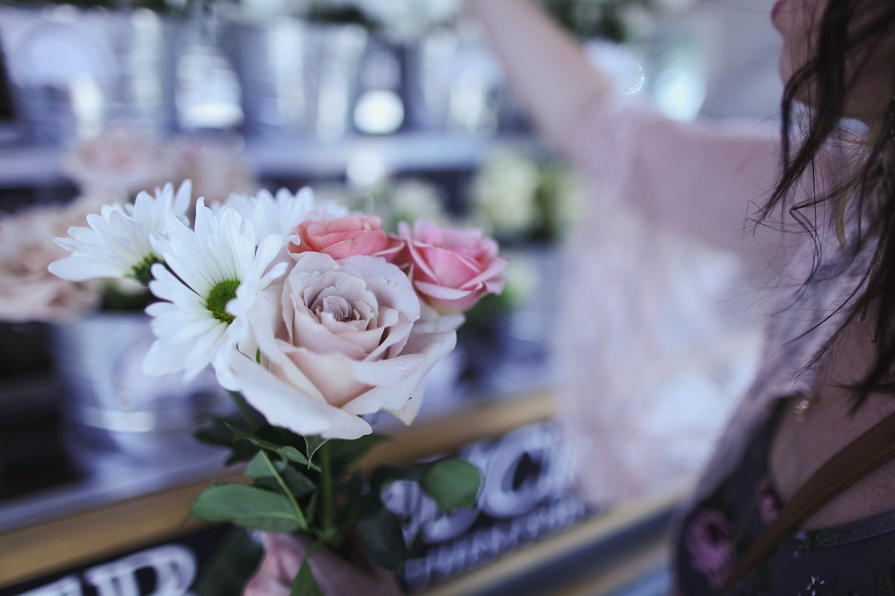

Acercar sentimientos
Transformar lo que quieres decir en composiciones florales cuidadas y una experiencia de elección clara y cercana.
RAÍCES SENCILLAS, IDEAS BONITAS
Un atelier con alma de jardín y corazón de barrio.

BARRANCO · DESDE 2023
En 2023, dos amigas imaginaron un rincón distinto en Barranco: un taller donde las flores no se eligieran solo por su color, sino por lo que podían hacer sentir. Entre bocetos, papeles crema y las primeras visitas al mercado de flores, nació Campo dei Fiori.
El nombre significa «campo de flores» en italiano. Nos recuerda esos jardines que crecen sin prisa, donde nada es idéntico y todo encuentra su lugar. Esa es nuestra manera de crear: ramos ligeros, texturas naturales y una atención a los pequeños detalles.
Hoy llevamos esa idea al mundo digital. Para que elegir un detalle se sienta tan cercano como entrar a un pequeño atelier, incluso desde casa.
Historia e identidad creadas para este proyecto académico; no representan una empresa comercial verificada.
LO QUE NOS MUEVE
Transformar lo que quieres decir en composiciones florales cuidadas y una experiencia de elección clara y cercana.
Ser un atelier recordado por sus detalles, su creatividad y su forma honesta de acompañar momentos cotidianos.
Sensibilidad, claridad y respeto por la naturaleza. Preferimos composiciones de temporada y envolturas sencillas.
EL SELLO CAMPO DEI FIORI
Una paleta suave, un lazo ligero, una dedicatoria tuya.
Los mejores detalles no
necesitan hacer ruido.